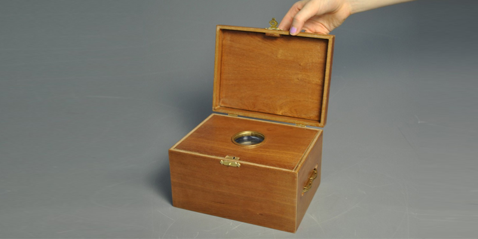

Treasured Memories is a new way to relive and enjoy special moments in a long lasting, unique and treasurable way.
The story behind Treasured Memories is simple. The four most treasured photographic memories that someone wishes to give as a gift to a loved one, are hidden away in the Treasured Memories box. When the box is opened the personal photographic memories are viewed by simply turning the decorative wheel and gazing through the magnification window.
In our modern, technologically advanced world, Treasured Memories creates a permanent, unique way to escape to and enjoy our most precious memories.